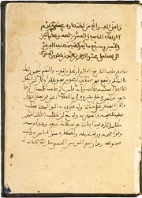
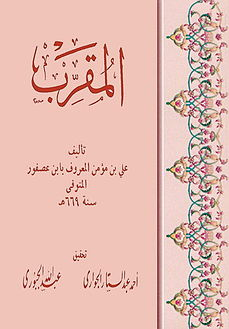
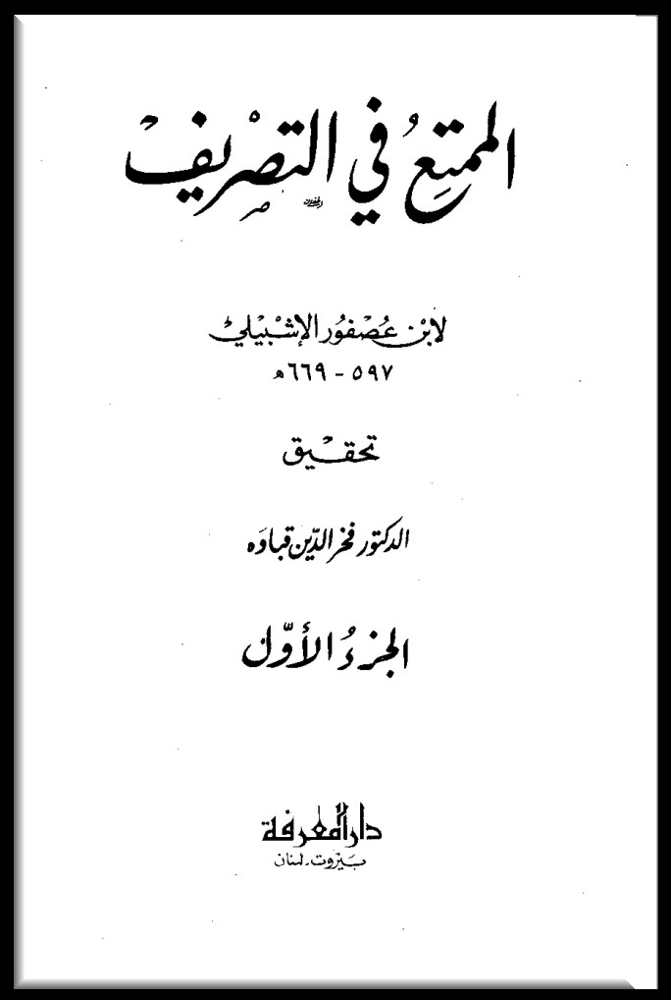

Né en Tunisie en 1332 et mort en Caire en 1406, inn Khaldoun est un savant issu d’une famille andalouse de la ville de Séville en Espagne. Il est le premier tunisien à être instituteur à l’université de zaytouna, étant auparavant l’un de ses élèves. Ibn Khaldoun est considéré créateur de la science de la sociologie, sujet auquel il a consacré la première partie d’un de ses livres les plus connus:Muqaddima
Le premier livre d'Ibn Khaldoun, Lubab al-Muhassal (La Quintessence de la théologie), est un commentaire condensé de la théologie de Fakhr ad-Dîn ar-Râzî, rédigé sous la surveillance de son professeur Al-Abuli à Tunis. Le manuscrit autographe, datant de 1351, est conservé à la bibliothèque de l'Escurial. Ar-Râzî est disciple de l'école acharite et Ibn Khaldoun s'en rapproche également. Comme il l'indique dans son autobiographie, Ibn Khaldoun écrit cinq autres manuscrits de 1351 à 1364. Ceux-ci consistent en un commentaire du poème Qasidat al-Burda de Bousiri113, un traité sur l'arithmétique, un commentaire d'un poème d'Ibn al-Khatib et plusieurs résumés sur la pensée d'Averroès. L'un de ces commentaires résumés des œuvres d'Averroès est rédigé pour Mohammed V al-Ghani pendant son séjour à la cour de ce dernier. Le dernier des cinq manuscrits est un précis de logique également rédigé pour Mohammed V al-Ghani. Ces travaux, qui s'inscrivent tous dans la plus pure tradition théologique et philosophique de l'époque, sont aujourd'hui perdus.
 Ibn Khaldoun écrit également un texte sur le soufisme, Schifa al-sa'il li tandhib al masa'il (traduit de l'arabe par René Perez sous le titre La Voie et la Loi, ou le Maître et le Juriste), vers 1373 à Fès ; c'est plus précisément une étude de sociologie religieuse. Il répond en fait à une controverse dans les cercles religieux d'Andalousie qui pose la question de savoir si un novice (murid) doit se diriger lui-même ou s'il a besoin d'un guide spirituel (cheikh) pour atteindre la béatitude.Mais ses travaux les plus importants sont ceux qu'il a écrits lors de sa retraite à la forteresse des Beni Salama. Il s'agit de son autobiographie (Târif) qui tire son intérêt du fait de l'éclairage qu'elle donne sur les conditions de la réalisation de ses autres travaux, son Livre des exemples et surtout sa Muqaddima
, Abu ’l-Ḥasan ʿ Alī b. Muʾmin, grammairien andalou du 7ème / 13ème siècle. Né à Séville en 597/1200, il
a étudié auprès d’al-S̲h̲alawbīn, le plus célèbre grammairien de l’époque. Après une dispute avec son
maître, il a quitté sa ville natale et a parcouru al-Andalus pour s’installer dans plusieurs villes où
il a enseigné le coran et la grammaire. Ensuite, il s'est rendu à Ifrīḳiya, à Tunis et à Bougie, à la
cour du afṣid amīr Abū Zakariyyāʾ. De retour dans son pays, il se rendit une nouvelle fois à Al-Andalus,
puis rejoignit le Mag̲h̲rib et séjourna à Salé.

détenteur de la brigade arabe de son temps en Andalousie, a appris l'arabe et la littérature sur Abi
Hassan al-Dabbaj et Abou Ali Al-Shlubin et lui a confié beaucoup de choses, à l'instar d'Al-Hassan Rahan
Khan. Arabe, Ryan de littérature, bon comportement, le plus brillant de la graduation d’Abou Ali
Chalubin et le mieux noté dans la science de la langue. Les effets du livre sont aussi proches qu’ils
sont, et la décharge est délicieuse.
Faute de sources, on n’a malheureusement pas trop d’informations concernant la vie de
ce savant mais on est sûr que son influence dans le domaine linguistique est considérable.
Ibn Asfour a écrit dans divers genres littéraires et tout ce qui a trait à la langue. Il ne se
limite pas à un domaine. Il écrit en grammaire et en commentaire, explique la poésie et décrit les six
préceptes. Comme en témoigne la composition grammaticale de sa participation à la science de la logique
et à cette bonne division et à cette division, l’argument est ferme et énergique, et ses paroles sont
antérieures aux expressions d’autres expressions grammaticales.

Parmi ses livres, on peut citer: